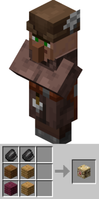
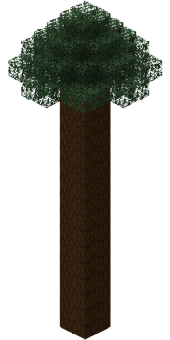

EMERALD WITH STICKS
How does it work?
For this method to farm you need a fletcher villager, he can trade 32 sticks for 1 emerald by start. To get this profession you get a unemployed villager and place a fletching table near. The table is made with 2 flints on top and 4 woods under, like a crafting table with 2 flints on top (see image).

The best type of wood:
The type of wood really does not matter much, but the tree format does. The best sapling to use is the spruce one, because if you make a 2x2 on the floor, it grows a lot and gives more wood than every other tree.
